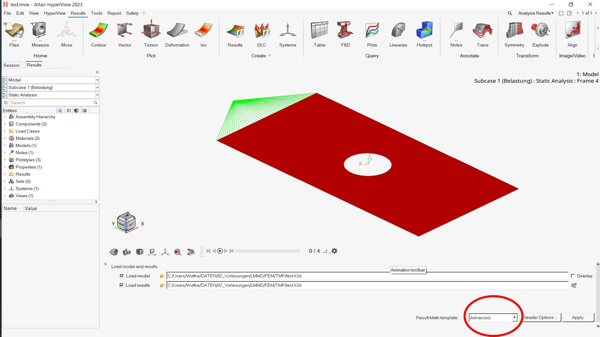
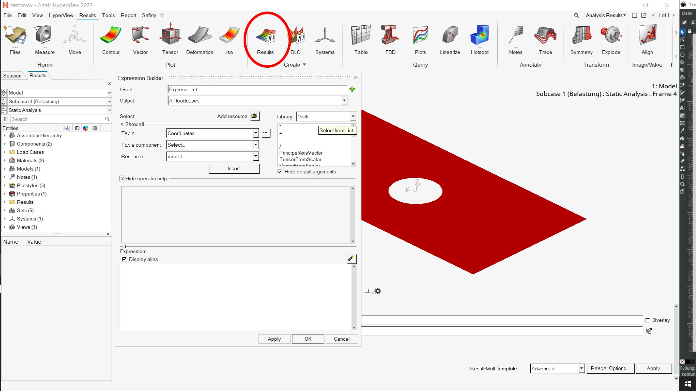
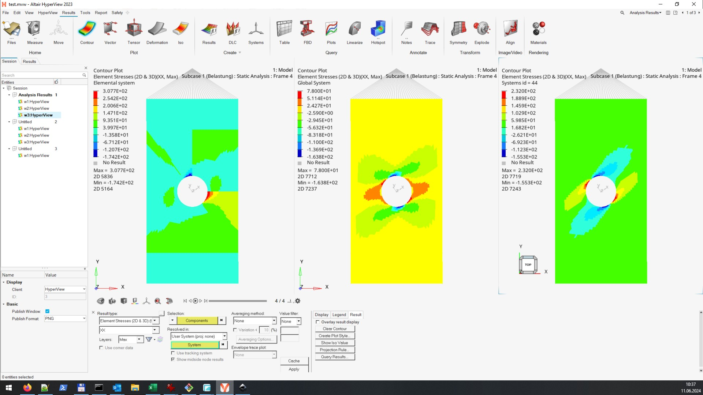
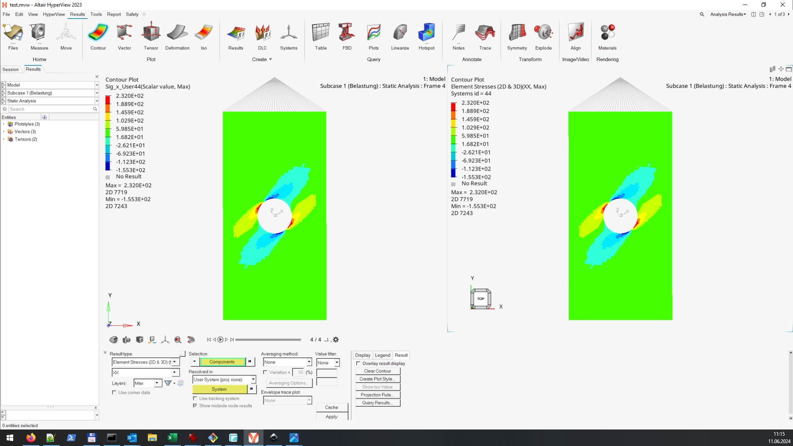

Creating Results in Hyperworks#
Using the expression builder#
In hypermash (resp. hyperview) it is possible to create your own result color plot by combinig different results by using the “Expression Bulider”.
The Expression builer and/or specific functions are only availible, if the Result-Math-template “Advanced” is choosen when loading the model.
screenshot for Hyperworks 2023: 
The Expression Builder is called by clicking on the Results button (in older versions by clicking on the button derived results. In this context menu, various results can be selected and linked with the usual mathematical operators. The result type is choosen in the drop-down-menue Table. The specific result in the drop-down Table-component. For example: If you want to operate with the whole stress tensor, only the table element-stresses needs to be selected. If you need the shear stress, the table comoponend XY (for \(\tau_{xy}\)) needs to be selected in addition.
How to find the Expression builer.
screenshot for Hyperworks 2023: 
But be careful: the Expression-Builder only “knows” the element results in the element or analysis coordinate system. The system ist different from the global and the User system, and can also be different from element to element (see the next section).
“Different types” of \(\;\sigma_x=\sigma_{11}\;\).
left: analysis system; middle: global system; right: user (or material): 
Getting a specific tensor component#
To get a specific tensor component in a specific basis system you have to follow the following workflow (or maybe more a workaround):
Transfor the tensor (table tensor componend) frpm the local (elemnet) system to the global system, using the function
Library: Model
function: TensorLocalToGlobal
Usage: TensorLocalToGlobal(R1.T2), here R1.T1 is the Elemnet Stress table componend
Transfor the “global” tensor from the global to any system
Library: Model
function: TensorGlobalToLocal
Usage: TensorGlobalToLocal("global tensor", 44), here 44 is the ID of a user system
Extract the required tensor component
Library: Math
function: scalarextractTensorLocalToGlobal
Usage: scalarextract("44 tensor", XX), here XX is the tensor component
Because the Expr. Builder can not handle user variables, the functions have to be combined in one calculation step:
Usage: scalarextract(TensorGlobalToLocal(TensorLocalToGlobal(R1.T2), 44), XX)
Comparison of the results for \(\;\sigma_{x}=\sigma_{11}\;\) in the material systsem.
left: result created with the expression builder; right: result created with the contur plot context menue: 
For a more detailed description whatch this video